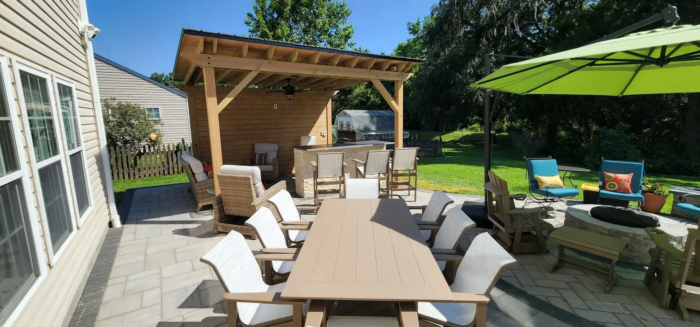
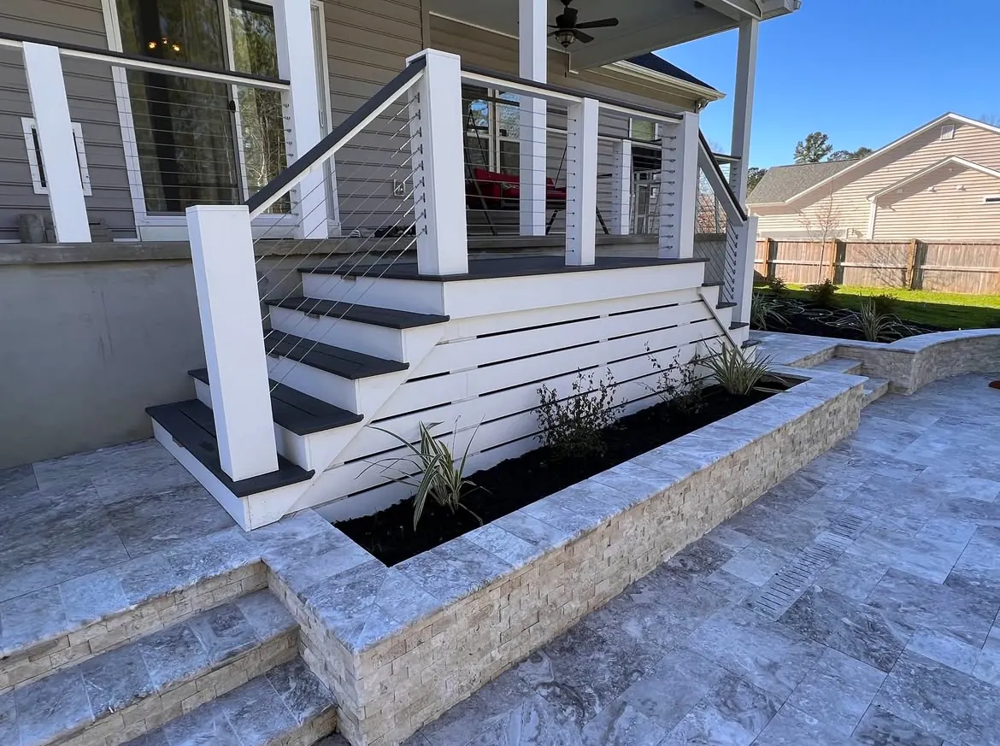

Patio and Paver Installation in Charleston, SC

Patios and Pavers Patios That Stay Flat, Years Later
A patio is only as good as what’s under it. Settling and tree roots are what pull a patio apart here, and both are decided before a single paver is laid.
We build paver, natural stone and poured concrete patios across Charleston, Mount Pleasant and Summerville. Doug and Zach Cramer do the site visits and the design themselves, and one of them is on the job every day until it’s finished.
How Big Should a Patio Be?
There isn’t a standard size — it depends what you’ll use it for and what the space allows. Two rules of thumb:
- 10 x 10 is the smallest we’d recommend. That’s enough for a table and some chairs without it feeling tight.
- A fire pit needs more. You need room to get around the fire and pull chairs back, so plan larger from the start rather than adding on later.
| Patios, starting point | about $18/sq ft |
|---|---|
| Poured concrete | about $12/sq ft, the cheapest option |
| Concrete pavers | middle ground, range of products |
| Porcelain pavers | cheaper than stone, strong, heat resistant |
| Natural stone | the premium, best looking and longest lasting |
$18 a square foot is a fair starting point. Where you land depends mostly on the material, and we’ll price the exact layout once the design is set.
Showcasing our Recent Works
Explore a selection of our recent projects that highlight our expertise, craftsmanship, and attention to detail.
1 / 6 2 / 6
2 / 6 3 / 6
3 / 6 4 / 6
4 / 6 5 / 6
5 / 6 6 / 6
6 / 6
Pavers, Porcelain, Concrete or Natural Stone
Natural stone is the luxury choice — travertine, bluestone, marble. It looks the best and lasts the longest, and it costs the most.
Poured concrete is the cheapest at about $12 a square foot, and don’t write it off: a tabby or salt-void finish looks excellent, particularly with a brick border around it. See concrete for how those are finished.
Concrete pavers are the middle ground, and they’re the right pick for a modern, minimalist look. We like Techo-Bloc, especially the larger format sizes, though there are plenty of good products worth looking at.
Porcelain pavers sit between the two and are worth a look if you want the natural-stone look without the natural-stone price. They’re generally cheaper than stone, they’re strong, they come in a huge range of looks, and they’re heat resistant, which matters on a patio that gets full afternoon sun.
The Base Is the Whole Job
There’s no single right system — different sites need different builds. These are the ones we use:
- Mortar-set on a solid concrete base. The best way to set a patio. It doesn’t change the paver — it means a paver with a crisp, square edge can be laid dead flat, every piece level with the next. Most pavers are made with a chamfered (rounded-off) edge precisely because it hides the small height differences an easier install leaves behind. Set square-edged stone in mortar and you don’t need that forgiveness.
- Compacted ROC base, with the pavers mortar-set on top or laid on sand or granite fines.
- #57 stone instead of ROC. It leaves air gaps, which helps stop tree roots growing up into the patio.
- Geotextile fabric underneath where the site calls for it.
Settling and roots are the two things that wreck a patio, and the fix for both is doing it right the first time: proper compaction, and a root barrier where roots are a risk.
Patterns and Borders
Borders make a patio. They frame the field and stop it reading as a slab dropped in the yard.
We’ve run brick borders around the outside of a tabby concrete patio and through the middle of it, breaking one large area into separate sections — which does more for how a big patio feels than any change of material would.
On the field itself, random patterns are what most people go for. Diamond patterns are popular too.

Summerville A Marble Patio Set in Mortar
The marble on this one is tile imported from Italy, set in mortar over a concrete slab.
That method is why it looks like it does. Mortar over a slab is what let us get a perfect install with crisp edges — no drift, no lippage, no gaps opening up later.
It’s finished with a brick border, which frames the marble and ties it to the house.
Drainage, Sealing and What Fails
Drainage is handled with proper grading, and where grading alone won’t do it, drain basins and piping to carry water off.
Worth knowing before you plan: Lowcountry towns are getting stricter about how much impermeable surface a property can have. Permeable pavers are becoming a necessity rather than an upgrade, and that’s better to design around than to discover late.
Sealing depends on the product, so we follow the manufacturer’s specification for the paver you choose rather than applying one rule to everything. Natural stone is a different case — travertine in particular is porous and hard to keep clean without a sealer. For gravel walkways and gravel around stepping stones we commonly use a rock glue to lock it in place.
How We Build Yours
- Consultation at your home. We look at the space, how you’ll use it and what budget you’re comfortable with. It’s free around Charleston, Mount Pleasant and Summerville. For Kiawah, Seabrook, Wadmalaw and Awendaw, or anywhere else more than an hour from Charleston or Summerville, there’s a charge for the proposal trip. It comes off the price if you go ahead with the build, and it is not refundable if you do not.
- Budget and design. Drawings, with optional 3D renderings at an additional cost.
- Grading, drainage and base. Settled before anything is laid, because this is the part that decides whether the patio stays flat.
- Install. Borders, field and finish, with one of us on site throughout.
Patios pair naturally with pergolas, outdoor kitchens, fire pits, retaining walls and landscape lighting.
Areas We Serve
Cramers Landscaping provides its services throughout:
We build patios across the Charleston area, including Charleston, Mount Pleasant, West Ashley, Summerville, Folly Beach, and Sullivan’s Island.
Projects We’ve Built
Real jobs, with the story of how each one came together.


Frequently Asked Questions
How much does a paver patio cost?
About $18 a square foot is a fair starting point for pavers. Where you land depends mostly on the material: poured concrete is the cheapest at around $12 a square foot, concrete pavers are the middle ground, porcelain sits above those, and natural stone like travertine, bluestone or marble is the premium. We price the exact layout once the design is set.
What size should my patio be?
There is no standard size, it depends on what you will use it for and what the space allows. 10 by 10 is the smallest we would recommend, which fits a table and chairs. If you want a fire pit you need more, because you have to be able to move around it and pull chairs back.
Paver patio or poured concrete?
Poured concrete is the cheapest at about $12 a square foot, and a tabby or salt-void finish looks excellent, especially with a brick border. Concrete pavers are the middle ground and suit a modern, minimalist look. Porcelain pavers sit a step above those: cheaper than natural stone, strong, heat resistant and available in a wide range of looks. Natural stone is the luxury option, the best looking and the longest lasting. Pavers of any kind also have the advantage that individual pieces can be lifted and replaced, which cracked concrete cannot.
Are porcelain pavers a good choice for a patio?
They are, and they are often the best value on the list. Porcelain is generally cheaper than natural stone, it is strong, it comes in a wide variety of looks including convincing stone and timber finishes, and it is heat resistant, which you notice on a patio in full sun. Like any paver, individual pieces can be lifted and replaced.
What goes under a patio?
The best method is mortar-setting on a solid concrete base. That does not give the paver a crisp edge — it means a paver that already has one can be laid dead flat, every piece level with the next. Most pavers are made with a chamfered, rounded-off edge specifically because it hides the small height differences a quicker install leaves behind; square-edged stone set in mortar does not need that forgiveness. We also use a compacted ROC base with the pavers mortar-set or laid on sand or granite fines, or #57 stone in place of ROC, which leaves air gaps that help stop tree roots growing up into the patio. Geotextile fabric goes underneath where the site calls for it.
Why do patios settle and come apart?
Settling and tree roots are the two biggest failures, and both come down to how the patio was built. Proper compaction and a root barrier where roots are a risk is what prevents them. There is no fixing it afterwards cheaply, so it has to be right the first time.
Do pavers need to be sealed?
It depends on the product, so we follow the manufacturer's specification for the paver you choose rather than applying one rule to everything. Natural stone is a different case: travertine in particular is porous and hard to keep clean without a sealer.
What paver brands do you use?
We like Techo-Bloc, particularly the larger format sizes, and there are plenty of other good products worth exploring. The right choice depends on the look you are after and the budget.
Do I need permeable pavers?
Increasingly, yes. Lowcountry towns are getting stricter about how much impermeable surface a property can have, so permeable pavers are becoming a necessity rather than an upgrade. It is better to design around that than to find out late.
What patterns look best?
Most people go for random patterns, and diamond patterns are popular too. Borders matter more than the field pattern: they frame the patio and stop it reading as a slab dropped in the yard. We have run brick borders around the outside of a tabby concrete patio and through the middle of it, breaking one large area into sections.
Get in Touch
Request a Free Patio Consultation
Ready for a patio the family will actually use? Tell us how you want to use the space and we’ll come and look at it with you.
Call or text Doug at (843) 614-9773, or fill in the form below.
Based In
9153 Markleys Grove Blvd, Summerville, SC
We come to you. There is no office or showroom to visit.
Phone
Hours
Monday – Friday: 8:00 AM – 5:00 PM
Saturday: 9:00 AM – 2:00 PM
Sunday: Closed